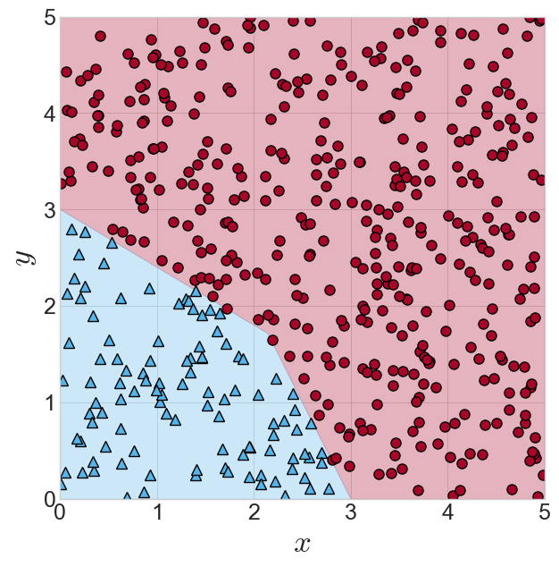
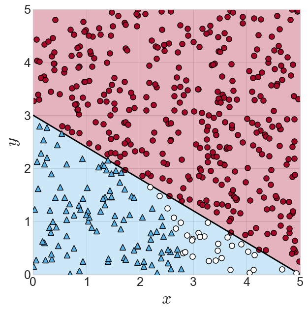
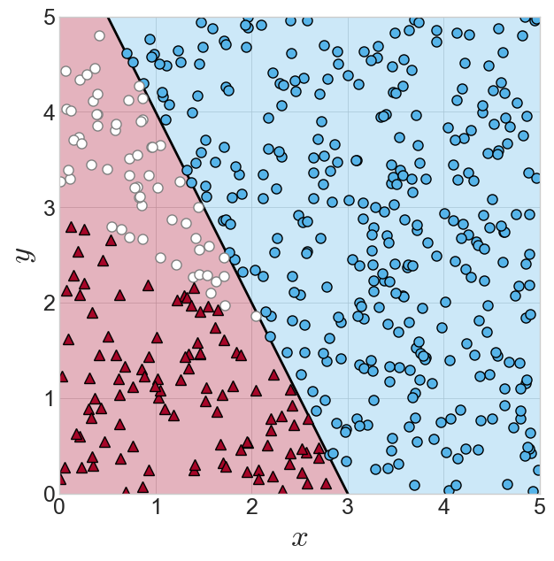
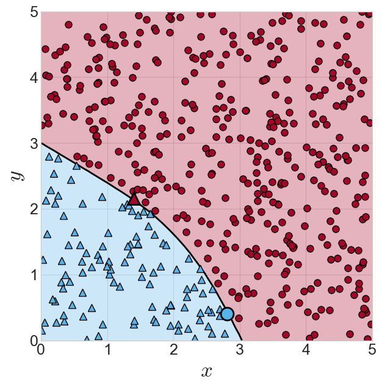
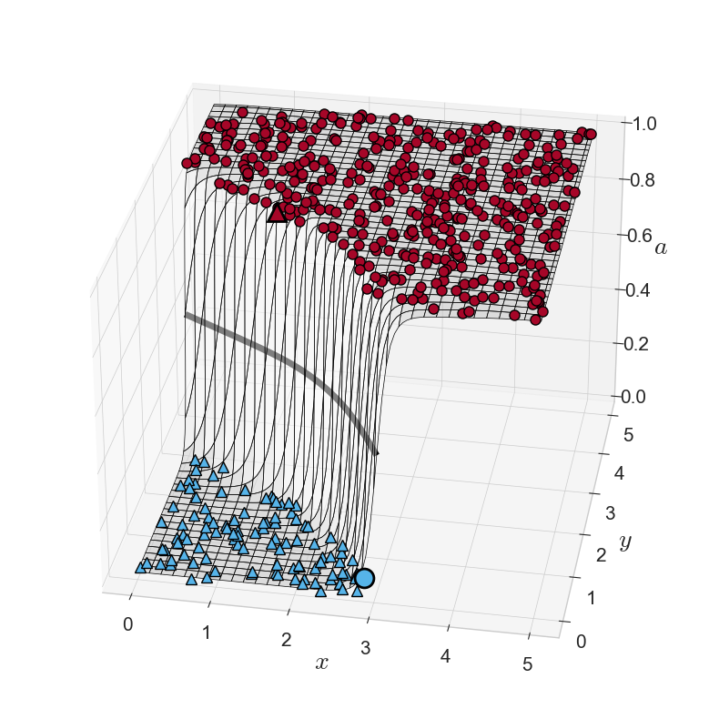
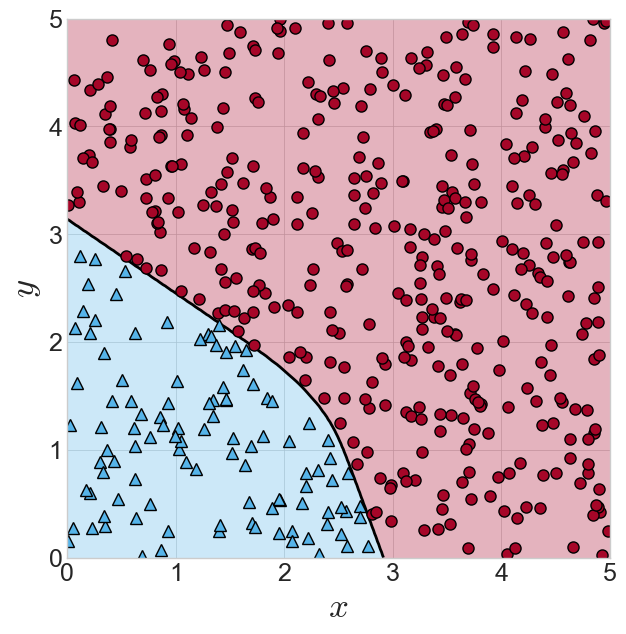

import numpy as np
import matplotlib.pyplot as plt
import matplotlib as mpl
from mpl_toolkits import mplot3d
from matplotlib.colors import ListedColormap
cm2 = ListedColormap(['C6', 'C1'])
cm2inv = ListedColormap(['C1', 'C6'])
# 전역으로 지정한 numpy 출력 형식
np.set_printoptions(precision=4, linewidth=150)
# matplotlib 스타일 지정
mpl.style.use('bmh')
mpl.style.use('seaborn-whitegrid')인공신경망과 역전파
인공신경망과 역전파
- 마지막 과정으로 가장 간단한 인공신경망을 설계하고 이를 역전파 알고리즘을 통해 학습시키는 코드를 작성
보조함수 정의
def logistic(x):
"""
logistic sigmoid function
"""
return 1 / (1+np.exp(-x))데이터 로딩
- neuralnet_make_samples.ipynb 파일에서 만든 데이터를 로딩
D = np.load('C:/Users/kmkim/Desktop/projects/blog/docs/data/08-nndata.npz')
samples = D['samples']
target = D['target']samples.shape, target.shape((500, 2), (500,))- 데이터는 500개 2차원 점으로 구성되어 있고 각 점 마다 0, 1이 기록된 타겟이 함께 있음
결정 경계와 타겟이 표시된 데이터
fig = plt.figure(figsize=(7, 7))
ax = fig.add_subplot(1, 1, 1)
ax.xaxis.set_tick_params(labelsize=18)
ax.yaxis.set_tick_params(labelsize=18)
ax.set_xlabel('$x$', fontsize=25)
ax.set_ylabel('$y$', fontsize=25)
ax.plot(samples[target==1,0], samples[target==1,1], 'o',
markerfacecolor='C1', markeredgecolor='k', markersize=8)
ax.plot(samples[target==0,0], samples[target==0,1], '^',
markerfacecolor='C6', markeredgecolor='k', markersize=8)
x1 = np.linspace(0, 15/7, 50)
x2 = np.linspace(15/7, 3, 50)
# 미리 정의된 pos, neg area
pos_area = np.array([0,3, 0,5, 5,5, 5,0, 3,0, 15/7,12/7]).reshape(6,2)
pos_polygon = mpl.patches.Polygon(pos_area, color='C1', alpha=0.3)
ax.add_patch(pos_polygon)
neg_area = np.array([0,0, 0,3, 15/7,12/7, 3,0]).reshape(4,2)
neg_polygon = mpl.patches.Polygon(neg_area, color='C6', alpha=0.3)
ax.add_patch(neg_polygon)
ax.set_ylim(0,5)
ax.set_xlim(0,5)
plt.show()
$3x + 5y - 15 = 0 $ 로 분류
- 로지스틱 회귀에서 배운 선형 분류기 다른게 말하면 퍼셉트론으로 주언 데이터를 분류 하기 위해 매개변수 값을 3, 5, -15 로 설정
x = np.linspace(0, 5, 50)
dcs_bnd_1 = lambda x: -(3/5)*x + 3
dcs_bnd_1_imp = lambda x, y: (3)*x + (5)*y + (-15) #implicity 음항수 형태fig = plt.figure(figsize=(7, 7))
ax = plt.axes()
ax.xaxis.set_tick_params(labelsize=18)
ax.yaxis.set_tick_params(labelsize=18)
ax.set_xlabel('$x$', fontsize=25)
ax.set_ylabel('$y$', fontsize=25)
X1, X2 = np.meshgrid(x, x)
Y = dcs_bnd_1_imp(X1.ravel(), X2.ravel()).reshape(X1.shape)
ax.contourf(X1, X2, Y, [-100, 0, 100], cmap=cm2, alpha=0.3)
ax.plot(x, dcs_bnd_1(x), color='k', zorder=10)
y1_bin = dcs_bnd_1_imp(samples[:,0], samples[:,1]) > 0
ax.plot(samples[y1_bin, 0],
samples[y1_bin,1], 'o',
markerfacecolor='C1', markeredgecolor='k', markersize=8)
not_y1_bin = np.invert(y1_bin)
not_y1_and_target = np.logical_and(not_y1_bin,target)
ax.plot(samples[not_y1_and_target, 0], samples[not_y1_and_target, 1], 'o',
markerfacecolor='white', markeredgecolor='k', markersize=8, zorder=20)
ax.plot(samples[np.where(target==0)[0], 0], samples[np.where(target==0)[0], 1], '^',
markerfacecolor='C6', markeredgecolor='k', markersize=8, zorder=20)
ax.set_ylim(0,5)
ax.set_xlim(0,5)
plt.show()
- 분류 결과를 보면 결정 경계 아래쪽에 있는 흰색 동그라미는 세모로 잘못 분류
$ -6x - 3y + 18 = 0 $로 분류
- 가중치 값을 바꿔서 다른 선형 분류기로 분류
dcs_bnd_2 = lambda x: -2*x + 6
dcs_bnd_2_imp = lambda x, y: (-6)*x + (-3)*y + (18)fig = plt.figure(figsize=(7,7))
ax = fig.add_subplot(1,1,1)
ax.xaxis.set_tick_params(labelsize=18)
ax.yaxis.set_tick_params(labelsize=18)
ax.set_xlabel('$x$', fontsize=25)
ax.set_ylabel('$y$', fontsize=25)
X1, X2 = np.meshgrid(x, x)
Y = dcs_bnd_2_imp(X1.ravel(), X2.ravel()).reshape(X1.shape)
ax.contourf(X1, X2, Y, [-100, 0, 100], cmap=cm2, alpha=0.3)
ax.plot(x, dcs_bnd_2(x), color='k')
y2_bin = dcs_bnd_2_imp(samples[:,0], samples[:,1]) < 0
ax.plot(samples[y2_bin, 0], samples[y2_bin, 1], 'o',
markerfacecolor='C6', markeredgecolor='k', markersize=8)
not_y2_bin = np.invert(y2_bin)
not_y2_and_target = np.logical_and(not_y2_bin,target)
ax.plot(samples[not_y2_and_target, 0], samples[not_y2_and_target, 1], 'o',
markerfacecolor='white', markeredgecolor='gray', markersize=8)
ax.plot(samples[np.where(target==0)[0], 0], samples[np.where(target==0)[0], 1], '^',
markerfacecolor='C1', markeredgecolor='k', markersize=8)
ax.set_ylim(0,5)
ax.set_xlim(0,5)
plt.show()
이번에도 두 샘플을 정확하게 분류할 수 없음
결정경계 왼쪽 동그라미를 세모로 잘못 분류 하고 있음
위 두 경우를 합성하여 분류하는 경우
- 앞서 만든 두 선형 분류기를 함께 혼합하여 또 다른 선형 분류기의 입력으로 사용
X1, X2 = np.meshgrid(x, x)
# 두 선형 분류기 합치기[+]
w1, w2, bias = 10, -9, 4
a = lambda x, y: logistic(
w1*logistic(dcs_bnd_1_imp(x, y))
+ w2*logistic(dcs_bnd_2_imp(x, y))
+ bias
)
fig = plt.figure(figsize=(7,7))
ax = fig.add_subplot()
ax.xaxis.set_tick_params(labelsize=18)
ax.yaxis.set_tick_params(labelsize=18)
ax.set_xlabel('$x$', fontsize=25)
ax.set_ylabel('$y$', fontsize=25)
pred = a(samples[:,0], samples[:,1])
pred_pos = pred >= 0.5
pred_neg = pred < 0.5
ax.contour(X1, X2, a(X1,X2), cmap='gray', levels=[0.5])
ax.contourf(X1, X2, a(X1,X2), cmap=cm2, levels=[-10, 0.5, 10], alpha=0.3)
# for positive samples
TP = np.logical_and(target==1, pred_pos)
FN = np.logical_and(target==1, pred_neg)
# for negative samples
TN = np.logical_and(target==0, pred_neg)
FP = np.logical_and(target==0, pred_pos)
ax.plot(samples[TP,0], samples[TP,1], 'o',
markerfacecolor='C1', markeredgecolor='k', markersize=8)
ax.plot(samples[TN,0], samples[TN,1], '^',
markerfacecolor='C6', markeredgecolor='k', markersize=8)
ax.plot(samples[FN,0], samples[FN,1], 'o',
markerfacecolor='C6', markeredgecolor='k', markeredgewidth=2, markersize=15)
ax.plot(samples[FP,0], samples[FP,1], '^',
markerfacecolor='C1', markeredgecolor='k', markeredgewidth=2, markersize=15)
ax.set_ylim(0,5)
ax.set_xlim(0,5)
plt.show()
샘플 두 개만 틀리고 모두 바르게 분류
결정경계는 비선형으로 곡선형태를 띄고 있음
함수의 합성과정에서 비선형 함수인 로지스틱 시그모이드 함수가 끼어있어 전체 함수가 비선형성을 띄게됨
3차원 표현
fig = plt.figure(figsize=(10,10))
ax = fig.add_subplot(projection='3d')
plt.rc('xtick',labelsize=15)
plt.rc('ytick',labelsize=15)
x1 = np.linspace(0, 5, 101)
x2 = np.linspace(0, 5, 101)
X1, X2 = np.meshgrid(x1, x2)
ax.contour(X1, X2, a(X1, X2), linewidths=5, cmap='gray', levels=[0.5])
ax.plot_surface(X1, X2, a(X1, X2), color='w', edgecolor='k', alpha=0.5)
ax.plot3D(samples[TP,0], samples[TP,1], 1.0, 'o',
markerfacecolor='C1', markeredgecolor='k', markersize=8, zorder=10)
ax.plot3D(samples[TN,0], samples[TN,1], 0.0, '^',
markerfacecolor='C6', markeredgecolor='k', markersize=8, zorder=10)
ax.plot3D(samples[FN,0], samples[FN,1], 0.0, 'o',
markerfacecolor='C6', markeredgecolor='k', markeredgewidth=2, markersize=15, zorder=10)
ax.plot3D(samples[FP,0], samples[FP,1], 1.0, '^',
markerfacecolor='C1', markeredgecolor='k', markeredgewidth=2, markersize=15, zorder=10)
ax.xaxis.set_tick_params(labelsize=15)
ax.yaxis.set_tick_params(labelsize=15)
ax.zaxis.set_tick_params(labelsize=15)
ax.set_xlabel(r'$x$', fontsize=20)
ax.set_ylabel(r'$y$', fontsize=20)
ax.set_zlabel(r'$a$', fontsize=20)
ax.view_init(30, -80)
plt.show()
이렇게 다층퍼셉트론(다른 말로 인공신경망)은 선형 분류기인 로지스틱 회귀를 여러개 겹쳐 사용한것 임을 확인
이제 이렇게 만들어진 인공신경망을 계산하는 함수를 만들어 전체를 네트워크 하나로 처리
network 함수
아래 함수는 샘플 점
X아 로지스틱 회귀 모델 세개에 해당하는 매개변수 아홉 개를 입력으로 받아 이 네트워크의 출력을 계산하는 함수이하 매개변수는 가중치 또는 가중치와 바이어스라는 용어를 혼용
def network(X, W):
"""
X : (N, D)
W : (3, 3)
[b^(1)_1, w^(1)_11, w^(1)_12]
[b^(1)_2, w^(1)_21, w^(1)_22]
[b^(2)_1, w^(2)_11, w^(2)_12]
ret : (N,)
D, H, A = 2, 2, 1
"""
######################################
# WRITE YOUR CODE HERE
# 1st layer
Z1 = np.dot(W[:2,1:], X.T)
Z1 = Z1 + W[:2,0].reshape(-1,1)
A1 = logistic(Z1)
# 2nd layer
Z = np.dot(W[-1,1:], A1)
Z = Z + W[-1,0]
A = logistic(Z)
######################################
return Anetwork 함수 검증
- 위 작성한 함수가 제대로 함숫값을 계산한다면 아래 셀 실행 결과는 2가 되어야 함
############################################################
# 이 테스트 코드의 결과는 2가 나와야 함
W = np.array([ [-15, 3, 5], [18, -6, -3], [4, 10, -9] ])
pred = network(samples, W)
pred.shape
pred[pred>=0.5] = 1
pred[pred<0.5] = 0
result = pred != target
print(f"오분류 데이터 개수: {result.sum()}")오분류 데이터 개수: 2- 네트워크를 함수로 작동하게 만들었으므로 최적화 과정을 적용해서 이 함수를 학습시킬 수 있음
목적함수 정의와 최적화
변수 초기화
Warray([[-15, 3, 5],
[ 18, -6, -3],
[ 4, 10, -9]])# 가중치를 무작위로 초기화
np.random.seed(17)
W = np.random.randn(9)
# W.reshape(3,3)
Warray([ 0.2763, -1.8546, 0.6239, 1.1453, 1.0372, 1.8866, -0.1117, -0.3621, 0.1487])- 가중치가 임의로 초기화 되었으므로 오분류 개수는 2보다 커져야 함
pred = network(samples, W.reshape(3,3))
pred[pred>=0.5] = 1
pred[pred<0.5] = 0
result = pred != target
print(f"오분류 데이터 개수: {result.sum()}")오분류 데이터 개수: 163목적함수 정의
- 분류 문제는 크로스엔트로피 목적함수를 자주 사용하지만 여기서는 역전파 과정을 간략하게 설명하기 위해 간단한 오차 제곱합 함수를 목적함수로 사용
def J(W, X, T):
"""
W: 함숫값을 결정하는 변수, 가중치 (9,)
X: 주어진 점 데이터 X, X: (N,D)
T: 데이터에 대한 클래스 T, 0 또는 1, T: (N,)
"""
N = X.shape[0]
W = W.reshape(3,3)
# 네트워크를 포워드 시키고 적당한 로스 함수를 계산하여 되돌림
Y = network(X, W)
return (1/(2*N)) * ((T-Y)**2).sum()# 초기 상태에서 목적함숫값
# 0.1263148192185165
J(W, samples, target)0.1263148192185165학습: scipy 사용
네트워크를 학습시키는 과정은 함수를 최적화하는 과정과 다르지 않음
그렇기 때문에 기존 라이브러리에서 제공하는 최적화 모듈을 사용해도 충분히 학습이 가능
여기서는 사이파이에서 제공하는 켤레기울기법을 사용
from scipy import optimize
# https://docs.scipy.org/doc/scipy/reference/generated/scipy.optimize.fmin_cg.html
W_star = optimize.fmin_cg(J, W, args=(samples, target), gtol=1e-06)Optimization terminated successfully.
Current function value: 0.000000
Iterations: 534
Function evaluations: 19760
Gradient evaluations: 1976W_star = W_star.reshape(3,3)
W_stararray([[ 48.0777, -10.5942, -15.3917],
[-27.7851, 9.6463, 3.5314],
[ 21.6201, -49.2293, 47.523 ]])학습된 네트워크로 분류
x = np.linspace(0, 5, 200)
X1, X2 = np.meshgrid(x, x)
dcs_bnd_1_imp_ = lambda x, y: W_star[0, 1]*x + W_star[0, 2]*y + W_star[0, 0]
dcs_bnd_2_imp_ = lambda x, y: W_star[1, 1]*x + W_star[1, 2]*y + W_star[1, 0]
a, b, c = W_star[2, 1], W_star[2, 2], W_star[2, 0]
o = lambda x, y: logistic( a*logistic(dcs_bnd_1_imp_(x, y))
+ b*logistic(dcs_bnd_2_imp_(x, y))
+ c )
fig = plt.figure(figsize=(7,7))
ax = plt.axes()
ax.xaxis.set_tick_params(labelsize=18)
ax.yaxis.set_tick_params(labelsize=18)
ax.set_xlabel('$x$', fontsize=25)
ax.set_ylabel('$y$', fontsize=25)
pred = o(samples[:,0], samples[:,1])
pred_pos = pred >= 0.5
pred_neg = pred < 0.5
ax.contour(X1, X2, o(X1,X2), cmap='gray', levels=[0.5])
ax.contourf(X1, X2, o(X1,X2), cmap=cm2, levels=[-10, 0.5, 10], alpha=0.3)
# for positive samples
TP = np.logical_and(target==1, pred_pos)
FN = np.logical_and(target==1, pred_neg)
# for negative samples
TN = np.logical_and(target==0, pred_neg)
FP = np.logical_and(target==0, pred_pos)
# True Positive and True Negative
ax.plot(samples[TP,0], samples[TP,1], 'o',
markerfacecolor='C1', markeredgecolor='k', markersize=8)
ax.plot(samples[TN,0], samples[TN,1], '^',
markerfacecolor='C6', markeredgecolor='k', markersize=8)
# False Positive and False Negative
ax.plot(samples[FN,0], samples[FN,1], 'o',
markerfacecolor='white', markeredgecolor='k',
markeredgewidth=2, markersize=15)
ax.plot(samples[FP,0], samples[FP,1], '^',
markerfacecolor='white', markeredgecolor='k',
markeredgewidth=2, markersize=15)
ax.set_ylim(0,5)
ax.set_xlim(0,5)
plt.show()- 학습이 잘되어 모든 데이터를 오류없이 잘 분류함을 확인할 수 있음
학습: 직접 수치미분해서
앞서
fmin_cg함수를 그냥 사용하기만 했는데 제대로 네트워크가 학습되는 것을 확인fmin_cg함수가 내부적으로 수치 미분을 수행하기 때문에 학습이 가능다음 단계로 수치 미분도 직접 해서 최적화를 수행
수치 미분함수는 이전에 만들어 뒀던 함수를 그대로 재사용
# 수치미분 함수
def numer_deriv(x, fun, args=(), h=None, method="central", dtype='float32'):
"""
Find the first derivative of a function at a point x.
x : The point at which derivative is found.
fun : Input function.
args : Tuple extra arguments passed to fun
h : step size
method: 'central' or 'forward'
dtype : Data type of gradient, must be set to 'longdouble' if numerically unstable
"""
# [1] 필요변수 초기화
scalar = False
m = 1
# [2] x가 스칼라인지 벡터인지 확인 스칼라면 무조건 벡터로 고치고 시작
if not hasattr(type(x), '__iter__'):
x = np.array([x])
scalar = True
# [3] x 타입을 디폴트로 float32로 변경
x = x.astype(dtype)
# [4] 미분 계수 초기화
g = np.zeros(x.shape[0]).astype(dtype)
# [5] 미분계수를 변수 개수만큼 루프를 돌면서 구하기
for i in range(x.shape[0]) :
# [5-1]변경된 위치를 설정할 변수 두개를 준비
# dx1[i], dx2[i]로 각 변수의 요소를 접근할 수 있음
dx1 = x.copy()
dx2 = x.copy()
# [5-2] h 결정 대충 변수의 1%정도
# https://en.wikipedia.org/wiki/Numerical_differentiation
if h == None:
h = np.sqrt(np.finfo(np.float32).eps) if x[i] == 0.0 else np.sqrt(np.finfo(np.float32).eps) * x[i]
# [5-3*] dx1[i] 변경
dx1[i] += h
# [5-4*] central이면 dx[2]도 함께 변경
if method == "central":
dx2[i] -= h
m = 2
# [5-5*] 미분계수 계산
g[i] = ( fun(dx1, *args) - fun(dx2, *args) ) / (m*h)
# [6] 결과값 리턴
if scalar:
return g[0]
else:
return g
scipy.optimize.fmin_cg
scipy에서 제공하는 켤레 경사법 함수의 매개변수를 살펴보면
scipy.optimize.fmin_cg(f, x0, fprime=None, args=(),
gtol=1e-05, norm=inf,
epsilon=1.4901161193847656e-08,
maxiter=None, full_output=0,
disp=1, retall=0, callback=None)f: callable, f(x, *args)
- Objective function to be minimized. Here x must be a 1-D array of the variables that are to be changed in the search for a minimum, and args are the other (fixed) parameters of f.
x0: ndarray
- A user-supplied initial estimate of xopt, the optimal value of x. It must be a 1-D array of values.
fprime: callable, fprime(x, *args), optional
- A function that returns the gradient of f at x. Here x and args are as described above for f. The returned value must be a 1-D array. Defaults to None, in which case the gradient is approximated numerically (see epsilon, below).
앞선 실험과 최대한 비슷한 최적화 결과를 만들기 위해
fmin_cg함수를 그대로 사용하되 수치미분 함수만 직접 만든 함수로 전달하는 방법을 사용수치 미분함수를 직접 만들었으니 간단하게 경사하강법을 직접 구현해도 되지만 그렇게 할 경우 선탐색이나 강하 방향을 구하는 부분이
fmin_cg와 달라져서 앞선 실험과 동일한 결과를 얻기 힘들어 짐fmin_cg를 그대로 사용하기 위해 함수 도움말을 살펴보면 함숫값을 구하는 f와 미분계수를 구하는 fprime이 함수 헤더가 동일해야 함지금 f에 해당하는
J의 해더는 다음과 같고def J(W, X, T):
fprime 역할을 할
numer_deriv의 헤더는 다음과 같아서 일치하지 않음numer_deriv(x, fun, args=(), h=None, method='central', dtype='float32'):
헤더가 다르므로 다음처럼
fmin_cg를 호출할 수 없고, 따라서 목적함수J와 미분계수를 계산하는numer_deriv의 헤더를 동일하게 해줄 방법이 필요fmin_cg(J, W, fprime=numer_deriv)
함수를 리턴하는 클로져 사용하여 이 문제를 간단하게 해결
# make_fprime함수는 내부적으로 함수를 하나 만들어 반환하는데
# 이 반환된 함수는 fprime(W, X, T)로 호출할 수 잇는 함수
# 반환된 함수 내부에서 numer_derive가 호출되어 함수 f에 대한
# 미분 계수를 구할 수 있음
def make_fprime(f):
def fprime(W, X, T, h=None, method='central', dtype='float32'):
c = numer_deriv(W, f, (X,T), h, method, dtype)
return c
return fprime- 클로저 문법을 사용하여
J를 수치미분하는 함수fprime을 생성
fprime = make_fprime(J)- 이제
fprime은 매개변수로W,X,T를 받는 함수이므로 목적함수J와 똑같은 호출 방식으로 미분 계수를 구할 수 있게 됨
fprime(W, samples, target)array([ 1.2754e-03, 2.9345e-03, 7.6448e-03, 7.3761e-05, 4.8319e-05, 3.5792e-05, -7.4173e-02, -1.2350e-02, -7.4711e-02], dtype=float32)- 모든 부품이 완성되었으므로 최적화 수행
# X = samples.copy()
# y = target.copy()
# W_scratch = W.copy()
W_scratch = optimize.fmin_cg(J, W, fprime=fprime,
args=(samples, target), gtol=1e-06 )Warning: Desired error not necessarily achieved due to precision loss.
Current function value: 0.000022
Iterations: 477
Function evaluations: 1893
Gradient evaluations: 1882- 최적회 결과를 사용하여 결과를 확인하면 잘 분류하는 것을 확인할 수 있음
W_scratch = W_scratch.reshape(3,3)
W_scratch
# array([[ 40.6953, -8.9941, -13.0385],
# [-24.8027, 8.6743, 2.8026],
# [ 18.5373, -42.7733, 42.151 ]])array([[ 37.5771, -8.2841, -12.0733],
[-23.0983, 8.0599, 2.6867],
[ 14.0654, -33.0609, 33.4288]])x = np.linspace(0, 5, 200)
X1, X2 = np.meshgrid(x, x)
dcs_bnd_1_imp_ = lambda x, y: W_scratch[0, 1]*x + W_scratch[0, 2]*y + W_scratch[0, 0]
dcs_bnd_2_imp_ = lambda x, y: W_scratch[1, 1]*x + W_scratch[1, 2]*y + W_scratch[1, 0]
a, b, c = W_scratch[2, 1], W_scratch[2, 2], W_scratch[2, 0]
o = lambda x, y: logistic( a*logistic(dcs_bnd_1_imp_(x, y))
+ b*logistic(dcs_bnd_2_imp_(x, y))
+ c )
fig = plt.figure(figsize=(7,7))
ax = plt.axes()
ax.xaxis.set_tick_params(labelsize=18)
ax.yaxis.set_tick_params(labelsize=18)
ax.set_xlabel('$x$', fontsize=25)
ax.set_ylabel('$y$', fontsize=25)
pred = o(samples[:,0], samples[:,1])
pred_pos = pred >= 0.5
pred_neg = pred < 0.5
ax.contour(X1, X2, o(X1,X2), cmap='gray', levels=[0.5])
ax.contourf(X1, X2, o(X1,X2), cmap=cm2, levels=[-10, 0.5, 10], alpha=0.3)
# for positive samples
TP = np.logical_and(target==1, pred_pos)
FN = np.logical_and(target==1, pred_neg)
# for negative samples
TN = np.logical_and(target==0, pred_neg)
FP = np.logical_and(target==0, pred_pos)
# True Positive and True Negative
ax.plot(samples[TP,0], samples[TP,1], 'o',
markerfacecolor='C1', markeredgecolor='k', markersize=8)
ax.plot(samples[TN,0], samples[TN,1], '^',
markerfacecolor='C6', markeredgecolor='k', markersize=8)
# False Positive and False Negative
ax.plot(samples[FN,0], samples[FN,1], 'o',
markerfacecolor='white', markeredgecolor='k',
markeredgewidth=2, markersize=15)
ax.plot(samples[FP,0], samples[FP,1], '^',
markerfacecolor='white', markeredgecolor='k',
markeredgewidth=2, markersize=15)
ax.set_ylim(0,5)
ax.set_xlim(0,5)
plt.show()신경망 미분하기 (데이터 하나에 대해서)
이제
fmin_cg에 전달했던 수치미분으로 미분 계수를 구하는 함수를 자동미분을 이용한 역전파 방식으로 바꿔서 전달할 차례지금부터 한단계 한단계 생략없이 주어진 네트워크에 자동미분을 적용하고 그 결과를 파이토치 자동미분과 비교하여 모든 결과의 유효성을 검증
# pytorch를 임포트 한다.
import torch순전파 함수(넘파이)
def forward(X, W, T, retopt='all'):
"""
네트워크를 피드포워드 시킨다. numpy 버전
X : 네트워크의 입력벡터 shape:(N,2)
retopt : 네트워크가 순전파되면서 각 레이어에서 계산된 결과 값을
되돌릴 방법을 설정한다.
- 'all' : 모든 층에서 계산된 결과를 튜플 형태로 되돌린다.
- 'fval' : 함수의 최종 출력값만 되돌린다.
"""
N = X.shape[0]
H1 = np.dot(W[:2,1:], X.T)
Z1 = H1 + W[:2,0].reshape(-1,1)
A1 = logistic(Z1)
H2 = np.dot(W[2,1:], A1)
Z2 = H2 + W[2,0]
A2 = logistic(Z2)
C = (1/(2*N)) * ((T-A2)**2).sum()
if retopt == 'all':
return (H1, Z1, A1, H2, Z2, A2, C)
elif retopt == 'fval':
return C순전파 함수(파이토치)
def forward_torch(X, W, T, retopt='all'):
"""
네트워크를 피드포워드 시킨다. pytorch 버전
X : 네트워크의 입력벡터 size:(N,2)
retopt : 네트워크가 순전파되면서 각 레이어에서 계산된 결과 값을
되돌릴 방법을 설정한다.
- 'all' : 모든 층에서 계산된 결과를 튜플 형태로 되돌린다.
- 'fval' : 함수의 최종 출력값만 되돌린다.
"""
N = X.size()[0]
T = torch.tensor(T, dtype=torch.double)
# 계산 결과 검증을 위해 pytorch를 사용하므로 numpy 어레이 뿐 아니라
# pytorch tensor형태에 대해서도 동일한 연산을 한다.
H1 = torch.mm(W[:2,1:], torch.t(X))
Z1 = H1 + W[:2,0].view(-1,1)
A1 = torch.sigmoid(Z1)
H2 = torch.mm(W[2:,1:], A1)
Z2 = H2 + W[2,0]
A2 = torch.sigmoid(Z2)
C = (1/(2*N)) * ((T-A2)**2).sum()
if retopt == 'all':
return (H1, Z1, A1, H2, Z2, A2, C)
elif retopt == 'fval':
return C넘파이 어레이와 텐서 프린트 보조함수
np.set_printoptions(precision=4, linewidth =150)
def print_tensor(t):
"""
텐서형 자료를 보기 좋게 프린트하기 위한 보조 함수
"""
def namestr(obj, namespace):
return [name for name in namespace if namespace[name] is obj]
var_name = namestr(t, globals())[0]
print("{}:{},{}".format(var_name, t.shape, t.dtype))
print(t)
print("-------------------------------------------")가중치 무작위 초기화
np.random.seed(17)
W = np.random.randn(9).reshape(3,3)
W_torch = torch.tensor(W, dtype=torch.double); W_torch.requires_grad=True
print_tensor(W)
print_tensor(W_torch)W:(3, 3),float64
[[ 0.2763 -1.8546 0.6239]
[ 1.1453 1.0372 1.8866]
[-0.1117 -0.3621 0.1487]]
-------------------------------------------
W_torch:torch.Size([3, 3]),torch.float64
tensor([[ 0.2763, -1.8546, 0.6239],
[ 1.1453, 1.0372, 1.8866],
[-0.1117, -0.3621, 0.1487]], dtype=torch.float64, requires_grad=True)
-------------------------------------------초기 상태에서 목적함숫값
초기 상태에서 목적함숫값을 구하여
forward함수가 제대로 네트워크를 포워드 패스하는지 확인J()와forward()의 출력값이 동일 입력에 대해서 동일해야 함
# 초기 상태에서 목적함숫값
J(W, samples, target)0.1263148192185165H1, Z1, A1, H2, Z2, A2, C = forward(samples, W, target)
C0.1263148192185165데이터 하나로 순전파 시키기
500개 샘플 중에 0번 샘플 하나만 네트워크에 입력하여 순전파 시키고 이후 단계별로 역전파 시켜 가중치와 바이어스에 대한 미분계수를 계산
이후 계산은 항상 직접 만든 코드와 파이토치의 계산 결과를 비교하면서 진행
N = 1
x = samples[[0]]
x_torch = torch.tensor(x, dtype=torch.double); x_torch.requires_grad=True
t = target[[0]]
print_tensor(x)
print_tensor(x_torch)
print_tensor(t)x:(1, 2),float64
[[2.754 3.5407]]
-------------------------------------------
x_torch:torch.Size([1, 2]),torch.float64
tensor([[2.7540, 3.5407]], dtype=torch.float64, requires_grad=True)
-------------------------------------------
t:(1,),float64
[1.]
-------------------------------------------H1, Z1, A1, H2, Z2, A2, C = forward(x, W, t)
print_tensor(H1)
print_tensor(Z1)
print_tensor(A1)
print_tensor(H2)
print_tensor(Z2)
print_tensor(A2)
print_tensor(C)H1:(2, 1),float64
[[-2.8986]
[ 9.5365]]
-------------------------------------------
Z1:(2, 1),float64
[[-2.6223]
[10.6818]]
-------------------------------------------
A1:(2, 1),float64
[[0.0677]
[1. ]]
-------------------------------------------
H2:(1,),float64
[0.1242]
-------------------------------------------
Z2:(1,),float64
[0.0125]
-------------------------------------------
A2:(1,),float64
[0.5031]
-------------------------------------------
C:(),float64
0.12344827837124746
-------------------------------------------H1_torch, Z1_torch, A1_torch, H2_torch, Z2_torch, A2_torch, C_torch = forward_torch(x_torch, W_torch, t)
print_tensor(H1_torch)
print_tensor(Z1_torch)
print_tensor(A1_torch)
print_tensor(H2_torch)
print_tensor(Z2_torch)
print_tensor(A2_torch)
print_tensor(C_torch)H1_torch:torch.Size([2, 1]),torch.float64
tensor([[-2.8986],
[ 9.5365]], dtype=torch.float64, grad_fn=<MmBackward0>)
-------------------------------------------
Z1_torch:torch.Size([2, 1]),torch.float64
tensor([[-2.6223],
[10.6818]], dtype=torch.float64, grad_fn=<AddBackward0>)
-------------------------------------------
A1_torch:torch.Size([2, 1]),torch.float64
tensor([[0.0677],
[1.0000]], dtype=torch.float64, grad_fn=<SigmoidBackward0>)
-------------------------------------------
H2_torch:torch.Size([1, 1]),torch.float64
tensor([[0.1242]], dtype=torch.float64, grad_fn=<MmBackward0>)
-------------------------------------------
Z2_torch:torch.Size([1, 1]),torch.float64
tensor([[0.0125]], dtype=torch.float64, grad_fn=<AddBackward0>)
-------------------------------------------
A2_torch:torch.Size([1, 1]),torch.float64
tensor([[0.5031]], dtype=torch.float64, grad_fn=<SigmoidBackward0>)
-------------------------------------------
C_torch:torch.Size([]),torch.float64
tensor(0.1234, dtype=torch.float64, grad_fn=<MulBackward0>)
-------------------------------------------단계별 계산
\(\frac{\partial C}{\partial \mathbf{a}^{(2)}}\): (1,1)
목적함수를 목적함수의 직접적인 입력값인 네트워크의 최종 출력 \(\mathbf{a}^{(2)}\)로 미분
현재 예제로 다루는 네트워크는 최종출력이 노드 하나라 \(\mathbf{a}^{(2)}\)가 스칼라지만 일반화를 위해 표기는 볼드인 벡터로 함
dA2 = -(t-A2)/N
dA2array([-0.4969])위 직접 미분한 결과와 파이토치 미분 결과를 비교
파이토치
grad함수를 사용하여 종속변수와 독립변수를 지정하고 미분계수를 되돌려 받음
# 종속변수, 독립변수, 종속변수와 곱해지는 상위 그래디언트
dA2_torch = torch.autograd.grad(C_torch, A2_torch, torch.tensor(1, dtype=torch.double),
retain_graph=True)[0]
dA2_torchtensor([[-0.4969]], dtype=torch.float64)- 코드상의 노테이션
- 목적함수에 대한 어떤 독립변수
x의 미분: 독립변수만 표시dx - 중간변수
y에 대한 어떤 독립변수x의 미분:dx: 두 변수를 언더바로 연결dy_dx
- 목적함수에 대한 어떤 독립변수
\(\frac{\partial C}{\partial \mathbf{z}^{(2)}}\): (1,1)
\(\frac{\partial C}{\partial \mathbf{a}^{(2)}}\)에 대한 미분을 끝냈으면 그 다음 단계로 \(\mathbf{z}^{(2)}\)에 대한 미분을 할 차례
이를 위해서 \(\frac{d\mathbf{a}^{(2)}}{d\mathbf{z}^{(2)}}\)를 계산하고 다음처럼 연쇄법칙 적용
\[ \frac{\partial C}{\partial \mathbf{z}^{(2)}} = \frac{d\mathbf{a}^{(2)}}{d\mathbf{z}^{(2)}} \frac{\partial C}{\partial \mathbf{a}^{(2)}} \]
dA2_dZ2 = logistic(Z2)*(1-logistic(Z2))
dZ2 = dA2_dZ2 * dA2
dZ2array([-0.1242])역시 파이토치 미분 결과와 비교
두 결과는 완전히 동일해야 함
# 종속변수, 독립변수, 종속변수와 곱해지는 상위 그래디언트
dZ2_torch = torch.autograd.grad(C_torch, Z2_torch, torch.tensor(1, dtype=torch.double),
retain_graph=True)[0]
dZ2_torchtensor([[-0.1242]], dtype=torch.float64)이런 식으로 단위 함수에 대한 미분을 완성하고 지금까지 구한 미분계수를 곱하여 현재까지 미분계수를 계속 구해 나가는 방식을 역전파 알고리즘이라고 함
그리고 특정층 \(l\)에 대한 가중합(가중치를 곱하고 바이어스를 더한 결과) \(\mathbf{z}^{(l)}\)에 대한 미분은 특별한 역할을 하므로 다음처럼 \(\delta\)로 주로 표시
\[ \boldsymbol{\delta}^{(l)} = \frac{\partial C}{\partial \mathbf{z}^{(l)}} \]
- 이 문서에서 다음 세 표현은 모두 동일한 것들
\[ \boldsymbol{\delta}^{(l)} = \frac{\partial C}{\partial \mathbf{z}^{(l)}} = \frac{\partial C}{\partial \mathbf{h}^{(l)}} \]
- 이 후 계속 진행되는 코드는 계속 반복되므로 슬라이드를 참조하면 됨
\(\frac{\partial C}{\partial \mathbf{b}^{(2)}}\): (1,1)
- \(\mathbf{b}^{(2)}\)에 대한 미분은 더하기 연산의 백워드 패스 특성에 따라 그냥 \(\frac{\partial C}{\partial \mathbf{z}^{(2)}}\)가 됨
db2 = dZ2
db2array([-0.1242])W_torchtensor([[ 0.2763, -1.8546, 0.6239],
[ 1.1453, 1.0372, 1.8866],
[-0.1117, -0.3621, 0.1487]], dtype=torch.float64, requires_grad=True)파이토치로 결과 확인
단 여기서는 모든 가중치와 바이어스가 모여있는
W_torch행렬로 미분을 해서 모든 매개변수에 대한 미분계수를 한꺼번에 계산그렇게 매개변수에 대한 미분 계수
dW_torch를 계산한 다음 적절한 위치의 숫자를 잘라와서 직접 계산한 미분 계수와 비교
# 종속변수, 독립변수, 종속변수와 곱해지는 상위 그래디언트
dW_torch = torch.autograd.grad(C_torch, W_torch, torch.tensor(1, dtype=torch.double),
retain_graph=True)[0]
dW_torch[2,0]tensor(-0.1242, dtype=torch.float64)\(\frac{\partial C}{\partial \mathbf{h}^{(2)}}\): (1,1)
dH2 = dZ2
dH2_torch = dZ2_torch\(\frac{\partial C}{\partial \mathbf{W}^{(2)}}\): (1,2)
\(\mathbf{h}^{(2)}\)를 \(\mathbf{W}^{(2)}\)로 미분하는 단계에서는 벡터를 벡터로 미분하는 것이기 때문에 결과는 야코비안이 되야 함
그런데 \(\mathbf{W}^{(2)}\)는 어디까지나 행벡터이기 때문에 정확히 야코비안을 구하려면 \(\mathbf{W}^{(2)}\)를 전치시켜서 열벡터로 만들고 나서 미분해야 함
아래는 그렇게 구해진 야코비안을 계산하는 코드
dH2_dW2 = A1.T #(1,2)
np.dot(dH2_dW2.T, dH2.reshape(-1,1))array([[-0.0084],
[-0.1242]])이렇게 구해진 야코비안을 다시 전치 시켜 현재까지 구한 그래디언테
dH2와 곱함여기서 역전파 알고리즘의 가장 일반적인 규칙인 ✅야코비안 전치 곱하기 그래디언트 가 처음으로 나타남
dH2_dW2 = A1.T #(1,2)
dW2 = np.dot(dH2_dW2.T, dH2.reshape(-1,1)) # (2,1) 야코비안 전치 곱하기 그레디언트
dW2.T #여기서 결과를 다시 전치시켜야 (1,2)가 되는 이유는 일반화 야코비안과 관련있고 뒤에 다시 설명array([[-0.0084, -0.1242]])dW_torch[2,1:]tensor([-0.0084, -0.1242], dtype=torch.float64)\(\frac{\partial C}{\partial \mathbf{a}^{(1)}}\): (2,1)
dH2_dA1 = W[2:,1:] # dH2/dA1은 (1,2)인 야코비안이 맞고
dH2_dA1.shape(1, 2)dA1 = np.dot(dH2_dA1.T, dH2.reshape(-1,1)) # 따라서 야코비안 전치 그래디언트가 성립, W.T * delta
dA1array([[ 0.045 ],
[-0.0185]])# 종속변수, 독립변수, 종속변수와 곱해지는 상위 그래디언트
dA1_torch = torch.autograd.grad(C_torch, A1_torch, torch.tensor(1, dtype=torch.double),
retain_graph=True)[0]
dA1_torchtensor([[ 0.0450],
[-0.0185]], dtype=torch.float64)\(\frac{\partial C}{\partial \mathbf{z}^{(1)}}\): (2,1)
dA1_dZ1 = np.zeros((A1.shape[0], Z1.shape[0]))
dA1_dZ1[np.diag_indices(Z1.shape[0])] = (logistic(Z1)*(1-logistic(Z1))).reshape(-1)
dA1_dZ1array([[6.3132e-02, 0.0000e+00],
[0.0000e+00, 2.2958e-05]])dZ1 = np.dot(dA1_dZ1.T, dA1)
dZ1array([[ 2.8396e-03],
[-4.2398e-07]])# 종속변수, 독립변수, 종속변수와 곱해지는 상위 그래디언트
dZ1_torch = torch.autograd.grad(C_torch, Z1_torch, torch.tensor(1, dtype=torch.double),
retain_graph=True)[0]
dZ1_torchtensor([[ 2.8396e-03],
[-4.2398e-07]], dtype=torch.float64)중간층에 비선형 활성화 함수는 일변수 스칼라 함수이므로 야코비안은 항상 대각행렬 형태로만 나타남
그래서 굳이 이렇게 어렵게 하지말고 그냥 엘리먼트 와이즈(아다마르 곱)로 처리하는 것이 더 간편하다.
넘파이로는 그냥
*연산자로 곱하면 그만
dA1_dZ1 = logistic(Z1)*(1-logistic(Z1))
dA1_dZ1array([[6.3132e-02],
[2.2958e-05]])dZ1_ = dA1_dZ1 * dA1
dZ1_array([[ 2.8396e-03],
[-4.2398e-07]])- 이후 계산은 \(\mathbf{W}^{(1)}\)으로 미분할 때 까지 동일하게 진행
\(\frac{\partial C}{\partial \mathbf{b}^{(1)}}\): (2,1)
db1 = dZ1
db1array([[ 2.8396e-03],
[-4.2398e-07]])dW_torch[:2,0].view(-1,1)tensor([[ 2.8396e-03],
[-4.2398e-07]], dtype=torch.float64)\(\frac{\partial C}{\partial \mathbf{h}^{(1)}}\): (2,1)
dH1 = dZ1
dH1_torch = dZ1_torch
dH1_torchtensor([[ 2.8396e-03],
[-4.2398e-07]], dtype=torch.float64)dH1array([[ 2.8396e-03],
[-4.2398e-07]])\(\frac{\partial C}{\partial \mathbf{W}^{(1)}}\): (2,2)
최종적으로 \(\frac{\partial C}{\partial \mathbf{W}^{(1)}}\)를 구하기위해 \(\frac{\partial \mathbf{h}^{(1)}}{\partial \mathbf{W}^{(1)}}\)를 계산해야 하는데 분자는 벡터, 분모는 행렬 일반적인 규칙으로 미분안됨
방법1: 일반화 야코비안을 결과로 얻는 법
- \(\mathbf{h}^{(1)}\)의 각 요소(스칼라)를 행렬 \(\mathbf{W}^{(1)}\)로 미분하여 결과 행렬을 요소 개수 만큼 만들고
- 이렇게 얻어진 행렬을 야코비안의 각 행으로 보는 방식, 즉 행이 두 개 있는데 각 행의 모양이 (2,2)인 행렬로 (2, (2,2))가 되는 식
방법2: \(\mathbf{W}^{(1)}\)을 \(\text{vec}\)연산자를 사용하여 벡터로 바꾸거나 일반화 야코비안을 행렬로 바꾸는 방법
- 잠시 후 코드로 같은 결과가 나옴을 확인할 예정
\(\frac{\partial \mathbf{h}^{(1)}}{\partial \mathbf{W}^{(1)}}\)를 계산하면 \(\mathbf{h}^{(1)}\)가 계산되는 과정 때문에 각 행렬에 결과적으로 \(\mathbf{h}^{(1)}\)를 계산하기 위해 \(\mathbf{W}^{(1)}\)과 곱해지는 입력이 나타나게 됨
dH1_dW1 = np.zeros((2,2,2))
dH1_dW1[0,0,:] = x
dH1_dW1[1,1,:] = x
print_tensor(dH1_dW1)dH1_dW1:(2, 2, 2),float64
[[[2.754 3.5407]
[0. 0. ]]
[[0. 0. ]
[2.754 3.5407]]]
-------------------------------------------dH1.reshape(dH1.shape[0], 1, 1)array([[[ 2.8396e-03]],
[[-4.2398e-07]]])위 두 셀에서 구한 \(\frac{\partial \mathbf{h}^{(1)}}{\partial \mathbf{W}^{(1)}}\)과 \(\frac{\partial C}{\partial \mathbf{h}^{(1)}}\)를 행렬곱
여기서 행렬곱할 때 앞에서 곱하는 행렬의 열을 뒤에서 곱하는 벡터의 숫자로 선형조합하는 논리가 적용됨
아래 코드는 그 논리를 그대로 코드로 옮긴 것
dW1 = (dH1_dW1*dH1.reshape(dH1.shape[0], 1, 1)).sum(axis=0)
dW1array([[ 7.8203e-03, 1.0054e-02],
[-1.1676e-06, -1.5012e-06]])dW_torch[:2,1:]tensor([[ 7.8203e-03, 1.0054e-02],
[-1.1676e-06, -1.5012e-06]], dtype=torch.float64)- 위 진행한 연산의 최종 결과를 정리하면 다음처럼 \(l\)층의 가중치 \(\mathbf{W}^{(l)}\)에 대한 미분의 일반 공식을 알 수 있음
\[ \frac{\partial C}{\partial \mathbf{W}^{(l)}} = \boldsymbol{\delta}^{(l)} \left( \mathbf{a}^{(l-1)}\right)^T \]
print(dH1.shape)
print(x.shape)
np.dot(dH1, x)(2, 1)
(1, 2)array([[ 7.8203e-03, 1.0054e-02],
[-1.1676e-06, -1.5012e-06]])텐서 평활화
\(W^{(1)}\)에 대한 미분 계수를 구할 때 행렬곱에서 알아본 열조합으로 설명되는 행렬곱을 적용
여기서는 텐서 형태로 구해지는 일반화 야코비안을 행렬 형태로 펼쳐서 계산하는 방법을 실험
결국은 같은 연산을 하게 되고 \(\mathbf{h}^{(1)}\)을 \(W^{(1)}\)으로 미분할 때 \(W^{(1)}\)을 \(\text{vec}\) 연산자로 벡터로 바꾼 다음 미분하는 것과 같은 결과를 얻게 됨
행렬에 \(\text{vec}\) 연산자와 \(\text{vec}\) 역연산이 적용되는 규칙은 “벡터, 행렬에 대한 미분”(https://metamath1.github.io/2018/01/02/matrix-derivatives.html)에서 vec과 vec전치 부분 참고
아래 코드는 (2,2,2)인 텐서를
reshape하여 (4,2)로 만들고 다시 원래 모양으로 되돌리는 실험 코드
T = np.arange(8).reshape(2,2,2)
Tarray([[[0, 1],
[2, 3]],
[[4, 5],
[6, 7]]])T.reshape(-1,2)array([[0, 1],
[2, 3],
[4, 5],
[6, 7]])T.reshape(-1,2).reshape(2,2,2)array([[[0, 1],
[2, 3]],
[[4, 5],
[6, 7]]])텐서를 평활화해서 경사도벡터와 곱하는 한줄 코드
- 텐서를 전치시키고, 평활화 한 다음 야코비안과 그래디언트를 곱하고 다시 원래 모양으로 돌려놓는 한줄 코드
np.dot(
dH1_dW1.transpose(1,2,0).reshape(-1,2), # Transposing and Flattening Jacobian
dH1 # Mutiply jacobian by gradient
).reshape(2, 2, 1).squeeze() # reshapingarray([[ 7.8203e-03, 1.0054e-02],
[-1.1676e-06, -1.5012e-06]])데이터가 여러개인 경우
이제 데이터 여러개가 한꺼번에 입력되는 경우에 대해 생각
여기서는 확인을 쉽게 하기 위해 데이터 세 개 에 대해서 실험 즉 \(N=3\)
N=3
x = samples[[0,5,10]]
x_torch = torch.tensor(x, dtype=torch.double); x_torch.requires_grad=True
t = target[[0,5,10]]
print_tensor(x)
print_tensor(x_torch)
print_tensor(t)x:(3, 2),float64
[[2.754 3.5407]
[0.1494 2.2842]
[1.4176 3.4657]]
-------------------------------------------
x_torch:torch.Size([3, 2]),torch.float64
tensor([[2.7540, 3.5407],
[0.1494, 2.2842],
[1.4176, 3.4657]], dtype=torch.float64, requires_grad=True)
-------------------------------------------
t:(3,),float64
[1. 0. 1.]
-------------------------------------------순전파와 역전파를 동시에 하는 함수
여러 데이터에 대해서 순전파와 역잔파를 동시에 하는 함수 작성
함수 내부 코드는 지금까지 진행한 단계별 코드를 한군데 모은것
def forward_backward(X, W, T):
"""
네트워크를 포워드, 백워드 시킨다. numpy 버전
X : 네트워크의 입력벡터 shape:(N,2)
반환 : 목적함수, (W1에 대한 미분계수, b1에 대한 미분계수,
W2에 대한 미분계수, b2에 대한 미분계수)
"""
# forward
N = X.shape[0]
H1 = np.dot(W[:2,1:], X.T)
Z1 = H1 + W[:2,0].reshape(-1,1)
A1 = logistic(Z1)
H2 = np.dot(W[2,1:], A1)
Z2 = H2 + W[2,0]
A2 = logistic(Z2)
C = (1/(2*N)) * ((T-A2)**2).sum()
# backward, dA->dZ->db->dW
dA2 = -(T-A2)/N
dA2_dZ2 = logistic(Z2)*(1-logistic(Z2))
dZ2 = dA2_dZ2 * dA2
db2 = dZ2
dW2 = np.dot(dZ2, A1.T)
dH2_dA1 = W[2:,1:]
dA1 = np.dot(dH2_dA1.T, dZ2.reshape(-1,1))
dA1_dZ1 = logistic(Z1)*(1-logistic(Z1))
dZ1 = dA1_dZ1 * dA1
db1 = dZ1
dW1 = np.dot(dZ1, X) # X is A0.T
return C, (dW1, db1, dW2, db2)
모든 데이터에 대해 각각 역전파한 미분계수를 평균하기
목적함수는 항상 데이터에 대해서 합산되는 형태이기 때문에 샘플하나로 순전파 역전파 한 과정을 데이터 개수만큼 반복하고 그 결과를 모두 더해서 평균하면 데이터 여러개에 대한 미분계수를 쉽게 구할 수 있음
아래 코드로 확인
f, dW1, db1, dW2, db2 = 0, 0, 0, 0, 0
for x_, t_ in zip(x, t):
x_ = np.array([x_])
t_ = np.array([t_])
fv, derivs = forward_backward(x_, W, t_)
f += fv
dW1 += derivs[0]
db1 += derivs[1]
dW2 += derivs[2]
db2 += derivs[3]
f /= N
dW1 /= N
db1 /= N
dW2 /= N
db2 /= N
print('C:', f)
print_tensor(dW1)
print_tensor(db1)
print_tensor(dW2)
print_tensor(db2)C: 0.12001678911062634
dW1:(2, 2),float64
[[7.9160e-03 1.2443e-02]
[1.5168e-06 4.1280e-05]]
-------------------------------------------
db1:(2, 1),float64
[[2.8791e-03]
[1.8509e-05]]
-------------------------------------------
dW2:(2,),float64
[ 0.0061 -0.0499]
-------------------------------------------
db2:(1,),float64
[-0.0497]
-------------------------------------------이 결과가 맞는지 아래에서 확인할 것임
이런 방식은 데이터 개수만큼 계속 반복을 하면서 순전파 역전파를 하기 때문에 비효올적
행렬 연산을 이용하여 한번 순전파와 역전파 만으로 모든 데이터에 대한 연산과 합산을 할 수 있음
역전파 한번으로 미분계수 구하기
xarray([[2.754 , 3.5407],
[0.1494, 2.2842],
[1.4176, 3.4657]])순전파
H1, Z1, A1, H2, Z2, A2, C = forward(x, W.reshape(3,3), t)
print_tensor(H1)
print_tensor(Z1)
print_tensor(A1)
print_tensor(H2)
print_tensor(Z2)
print_tensor(A2)
print_tensor(C)H1:(2, 3),float64
[[-2.8986 1.148 -0.4669]
[ 9.5365 4.4643 8.0089]]
-------------------------------------------
Z1:(2, 3),float64
[[-2.6223 1.4243 -0.1907]
[10.6818 5.6096 9.1542]]
-------------------------------------------
A1:(2, 3),float64
[[0.0677 0.806 0.4525]
[1. 0.9964 0.9999]]
-------------------------------------------
H2:(3,),float64
[ 0.1242 -0.1437 -0.0152]
-------------------------------------------
Z2:(3,),float64
[ 0.0125 -0.2554 -0.1269]
-------------------------------------------
A2:(3,),float64
[0.5031 0.4365 0.4683]
-------------------------------------------
C:(),float64
0.12001678911062633
-------------------------------------------H1_torch, Z1_torch, A1_torch, H2_torch, Z2_torch, A2_torch, C_torch = forward_torch(x_torch, W_torch, t)
print_tensor(H1_torch)
print_tensor(Z1_torch)
print_tensor(A1_torch)
print_tensor(H2_torch)
print_tensor(Z2_torch)
print_tensor(A2_torch)
print_tensor(C_torch)H1_torch:torch.Size([2, 3]),torch.float64
tensor([[-2.8986, 1.1480, -0.4669],
[ 9.5365, 4.4643, 8.0089]], dtype=torch.float64,
grad_fn=<MmBackward0>)
-------------------------------------------
Z1_torch:torch.Size([2, 3]),torch.float64
tensor([[-2.6223, 1.4243, -0.1907],
[10.6818, 5.6096, 9.1542]], dtype=torch.float64,
grad_fn=<AddBackward0>)
-------------------------------------------
A1_torch:torch.Size([2, 3]),torch.float64
tensor([[0.0677, 0.8060, 0.4525],
[1.0000, 0.9964, 0.9999]], dtype=torch.float64,
grad_fn=<SigmoidBackward0>)
-------------------------------------------
H2_torch:torch.Size([1, 3]),torch.float64
tensor([[ 0.1242, -0.1437, -0.0152]], dtype=torch.float64,
grad_fn=<MmBackward0>)
-------------------------------------------
Z2_torch:torch.Size([1, 3]),torch.float64
tensor([[ 0.0125, -0.2554, -0.1269]], dtype=torch.float64,
grad_fn=<AddBackward0>)
-------------------------------------------
A2_torch:torch.Size([1, 3]),torch.float64
tensor([[0.5031, 0.4365, 0.4683]], dtype=torch.float64,
grad_fn=<SigmoidBackward0>)
-------------------------------------------
C_torch:torch.Size([]),torch.float64
tensor(0.1200, dtype=torch.float64, grad_fn=<MulBackward0>)
-------------------------------------------단계별 역전파
- 데이터가 N개가 되었기 때문에 앞선 단계별 역전파를 하면서 얻어진 결과 행렬들에서 열 개수가 N개로 늘어났을 뿐 계산 과정과 코드는 완전히 동일
\(\frac{\partial C}{\partial \mathbf{a}^{(2)}}\): (1,N)
dA2 = -(t-A2)/N
dA2array([-0.1656, 0.1455, -0.1772])\(\frac{\partial C}{\partial \mathbf{z}^{(2)}}\): (1,N)
dA2_dZ2 = logistic(Z2)*(1-logistic(Z2))
dZ2 = dA2_dZ2 * dA2
dZ2array([-0.0414, 0.0358, -0.0441])\(\frac{\partial C}{\partial \mathbf{b}^{(2)}}\): (1,1)
앞서 샘플이 하나일 때 \(\frac{\partial C}{\partial \mathbf{b}^{(l)}} = \delta^{(l)}\)이었음
그런데 여기서는 \(\delta^{(l)}\)이 데이터 개수만큼 있어서 (1,N) 형태이므로 데이터에 대해서 모두 합산
db2 = dZ2.sum(axis=0, keepdims=True)
dH2 = dZ2
db2array([-0.0497])이 결과는 앞서 루프를 사용해서 계산한
db2와 일치해야 함여기서 \(\mathbf{b}^{(l)}\)에 대한 일반 공식을 얻음
\[ \frac{\partial C}{\partial \mathbf{b}^{(l)}} = \sum_{j} \boldsymbol{\delta}^{(l)}_{:\, , \, j} \]
- 위 식에서 \(\boldsymbol{\delta}^{(l)}_{:\, , \, j}\)는 \(\boldsymbol{\delta}^{(l)}\)의 \(j\)번째 열을 나타냄
\(\frac{\partial C}{\partial \mathbf{W}^{(2)}}\): (1,2)
dH2_dW2 = A1.T
dW2 = np.dot(dH2, dH2_dW2) # 정리된 결과로 야코비안 전치 평활화 따위 하지 않고 바로 delta * a.T
dW2array([ 0.0061, -0.0499])\(\frac{\partial C}{\partial \mathbf{a}^{(1)}}\): (2,N)
dH2_dA1 = W[2:,1:] # 분자레이아웃 아코비안 W2 (1,2)
dA1 = np.dot(dH2_dA1.T, dH2.reshape(1,-1)) # W.T * delta
dA1array([[ 0.015 , -0.013 , 0.016 ],
[-0.0062, 0.0053, -0.0066]])- 여기서 \(\mathbf{a}^{l}\)에 대한 미분의 일반 공식을 얻을 수 있음
\[ \frac{\partial C}{\partial \mathbf{a}^{(l)}} = \frac{\partial \mathbf{z}^{(l+1)}}{\partial \mathbf{a}^{(l)}} \frac{\partial C}{\partial \mathbf{z}^{(l+1)}} ={\mathbf{W}^{(l+1)}}^T \delta^{(l+1)} \]
\(\frac{\partial C}{\partial \mathbf{z}^{(1)}}\): (2,N)
dA1_dZ1 = logistic(Z1)*(1-logistic(Z1))
dA1_dZ1array([[6.3132e-02, 1.5636e-01, 2.4774e-01],
[2.2958e-05, 3.6357e-03, 1.0576e-04]])dZ1 = dA1_dZ1 * dA1 # 엘리먼트와이즈 곱
dZ1array([[ 9.4654e-04, -2.0261e-03, 3.9587e-03],
[-1.4133e-07, 1.9344e-05, -6.9385e-07]])\(\frac{\partial C}{\partial \mathbf{b}^{(1)}}\): (2,1)
db1 = dZ1.sum(axis=1, keepdims=True)
db1array([[2.8791e-03],
[1.8509e-05]])\(\frac{\partial C}{\partial \mathbf{W}^{(1)}}\): (2,2)
dW1 = np.dot(dZ1, x) # delta * a.T
dW1array([[7.9160e-03, 1.2443e-02],
[1.5168e-06, 4.1280e-05]])\(\mathbf{W}^{(1)}\)로 미분하는 경우는 데이터에 대해 모두 합산하는 과정이 없는데 구해진 미분 계수를 보면 앞서 루프를 돌면서 구한 결과와 정확히 일치함
합산 과정이 없어도 제대로 미분계수가 구해지는 이유는 행렬곱이 되면서 데이터에 대해서 합산되는 과정이 저절로 실행되기 때문
이 과정을 바로 이해하기 위해서는 행렬곱을 앞에서 곱하는 행렬의 열과 뒤에서 곱하는 행렬의 행으로 외적하여 생기는 행렬들의 합으로 이해하는 시각이 필요
자세한 그림 표현은 슬라이드 참조
파이토치로 미분하기
- 파이토치로 미분해서 위 데이터 세개에 대한 역전파가 정확한지 확인
# 종속변수, 독립변수, 종속변수와 곱해지는 상위 그래디언트
dW_torch = torch.autograd.grad(C_torch, W_torch, torch.tensor(1, dtype=torch.double),
retain_graph=True)[0]
dW_torchtensor([[ 2.8791e-03, 7.9160e-03, 1.2443e-02],
[ 1.8509e-05, 1.5168e-06, 4.1280e-05],
[-4.9747e-02, 6.0737e-03, -4.9872e-02]], dtype=torch.float64)- 파이토치로 미분한 결과와 루프를 돌리면서 구한 결과, 자동미분으로 구한 결과를 모두 비교하면 동일함을 확인할 수 있음
자동미분으로 신경망 학습하기
마지막으로 역전파를 이용해서 미분계수를 구하는 함수를 만들고 이 함수를
scipy.optimize.fmin_cg에 전달하여 수치 미분한 결과와 동일한 결과가 얻어지는지 확인샘플 한개에 대해서 순전파, 역전파 하는 함수
forward_backward를 약간 수정하여foward_backward2로 작성매개변수로
W를 행렬형태로 변환하기 위하 행과 열에 해당하는 숫자k,l을 받는 것만 다르고 나머지 코드는 모두 동일
def forward_backward2(W, X, T, k, l):
"""
W: 모든 weight, bias를 가지고 있는 1차원 벡터
X: 네트워크의 입력벡터 shape:(N,2)
T: 네트워크의 정답벡터 shape:(N,)
k, l : weight, bias가 들어있는 행렬의 모양
반환 : dW
"""
# forward
N = X.shape[0]
W = W.reshape(k,l)
dW = np.zeros_like(W)
H1 = np.dot(W[:2,1:], X.T)
Z1 = H1 + W[:2,0].reshape(-1,1)
A1 = logistic(Z1)
H2 = np.dot(W[2,1:], A1)
Z2 = H2 + W[2,0]
A2 = logistic(Z2)
C = (1/(2*N)) * ((T-A2)**2).sum()
# backward, dA->dZ->db->dW
######################################################################
# WRITE YOUR CODE HERE
# 위 샘플 3개를 순전파 역전파 하나 코드를 참고하여 데이터 N개 에 대해서
# 순전파 역전파되는 코드를 단계별로 완성하세요.
###########
# dA2 ~ dZ2
dA2 = -(T-A2)/N
dA2_dZ2 = logistic(Z2)*(1-logistic(Z2))
dZ2 = dA2_dZ2 * dA2
#############
# db2 and dW2
db2 = dZ2.sum(axis=0, keepdims=True) #(1,)
dW2 = np.dot(dZ2, A1.T) #(2,)
# ------------------------------------------------------
###########
# dA1 ~ dZ1
dZ2_dA1 = W[2:,1:]
dA1 = np.dot(dZ2_dA1.T, dZ2.reshape(1,-1))
dA1_dZ1 = logistic(Z1)*(1-logistic(Z1))
dZ1 = dA1_dZ1 * dA1
#############
# db1 and dW1
db1 = dZ1.sum(axis=1, keepdims=True) # (2,1)
dW1 = np.dot(dZ1, X) # X is A0.T, (2,2)
#####################################################################
# dW 모양 만들고 벡터로 펴서 리턴
dW[:2,[0]] = db1
dW[:2,1:] = dW1
dW[2,0] = db2
dW[2,1:] = dW2
return dW.reshape(-1)
derivs = forward_backward2(W.reshape(-1), x, t, 3, 3)
derivsarray([ 2.8791e-03, 7.9160e-03, 1.2443e-02, 1.8509e-05, 1.5168e-06, 4.1280e-05, -4.9747e-02, 6.0737e-03, -4.9872e-02])- 미분하는 함수
forward_backward2와 호출을 동일하게 할 수 있는 목적함수J2작성
# fmin_cg에서 최적화 시킬 목적함수 f와 도함수 fprime을 동일하게 호출하므로
# 위 코딩한 forward_bacward2와 헤더를 맞춘 목적함수 J2를 만든다.
def J2(W, X, T, k, l):
"""
W: 함숫값을 결정하는 변수, 가중치 (9,)
X: 주어진 점 데이터 X, X: (N,D)
T: 데이터에 대한 클래스 T, 0 또는 1, T: (N,)
k, l : weight, bias가 들어있는 행렬의 모양
"""
N = X.shape[0]
W = W.reshape(k,l)
# 네트워크를 포워드 시키고 적당한 로스 함수를 계산하여 되돌림
Y = network(X, W)
return (1/(2*N)) * ((T-Y)**2).sum()
- 최종적으로
W를 다시 초기화 하고fmin_cg에 역전파 알고리즘을 사용하는 함수forward_backward2를 도함수로 제공하여 최적화 수행
Warray([[ 0.2763, -1.8546, 0.6239],
[ 1.1453, 1.0372, 1.8866],
[-0.1117, -0.3621, 0.1487]])W_star_bp = optimize.fmin_cg(J2, W, fprime=forward_backward2,
args=(samples, target, 3, 3), gtol=1e-06)Optimization terminated successfully.
Current function value: 0.000005
Iterations: 459
Function evaluations: 1851
Gradient evaluations: 1851- 결과를 확인해보면 거의 동일하게 학습되는 것을 확인할 수 있음
W_star_bp = W_star_bp.reshape(3,3)
W_star_bparray([[ 39.3466, -8.6752, -12.6186],
[-26.0899, 9.0534, 3.3043],
[ 17.6746, -40.7086, 40.2004]])x = np.linspace(0, 5, 200)
X1, X2 = np.meshgrid(x, x)
dcs_bnd_1_imp_ = lambda x, y: W_star_bp[0, 1]*x + W_star_bp[0, 2]*y + W_star_bp[0, 0]
dcs_bnd_2_imp_ = lambda x, y: W_star_bp[1, 1]*x + W_star_bp[1, 2]*y + W_star_bp[1, 0]
a, b, c = W_star_bp[2, 1], W_star_bp[2, 2], W_star_bp[2, 0]
o = lambda x, y: logistic( a*logistic(dcs_bnd_1_imp_(x, y))
+ b*logistic(dcs_bnd_2_imp_(x, y))
+ c )
fig = plt.figure(figsize=(7,7))
ax = plt.axes()
ax.xaxis.set_tick_params(labelsize=18)
ax.yaxis.set_tick_params(labelsize=18)
ax.set_xlabel('$x$', fontsize=25)
ax.set_ylabel('$y$', fontsize=25)
pred = o(samples[:,0], samples[:,1])
pred_pos = pred >= 0.5
pred_neg = pred < 0.5
ax.contour(X1, X2, o(X1,X2), cmap='gray', levels=[0.5])
ax.contourf(X1, X2, o(X1,X2), cmap=cm2, levels=[-10, 0.5, 10], alpha=0.3)
# for positive samples
TP = np.logical_and(target==1, pred_pos)
FN = np.logical_and(target==1, pred_neg)
# for negative samples
TN = np.logical_and(target==0, pred_neg)
FP = np.logical_and(target==0, pred_pos)
# True Positive and True Negative
ax.plot(samples[TP,0], samples[TP,1], 'o',
markerfacecolor='C1', markeredgecolor='k', markersize=8)
ax.plot(samples[TN,0], samples[TN,1], '^',
markerfacecolor='C6', markeredgecolor='k', markersize=8)
# False Positive and False Negative
ax.plot(samples[FN,0], samples[FN,1], 'o',
markerfacecolor='white', markeredgecolor='k',
markeredgewidth=2, markersize=15)
ax.plot(samples[FP,0], samples[FP,1], '^',
markerfacecolor='white', markeredgecolor='k',
markeredgewidth=2, markersize=15)
ax.set_ylim(0,5)
ax.set_xlim(0,5)
plt.show()